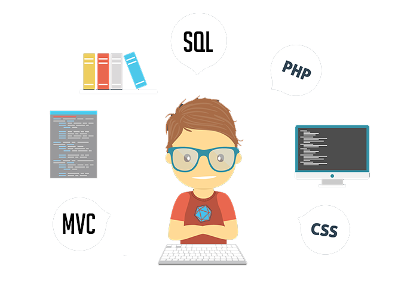

GIT
Logiciel de gestion de versions décentralisé
Présenter par Laurent.Vanni @unice.fr
Le quotidien du développeur seul
- Mais il n'y avait pas ce bug hier ?
- Pourquoi j'ai fait ça moi ?
- Comment je fais pour revenir en arrière ?
Le quotidien du développeur en équipe
- Est-ce que tu peux modifier X pendant que je m'occupe de Y ?
- Comment on fusionne nos codes maintenant ?
- ...
- Mais qui a touché à ce fichier !?
Un gestionnaire de version
À quoi ça sert ?
Les gestionnaires de versions
Petit tour d'horizon
Deux types :
- Centralisé : CSV, SVN
- Distribué : Mercurial, GIT, ...
Des fonctionnalités partagées :
- Commit, Révision, Dépôt, Branches, ...
CVS
Concurrent Versions System (1990)
Avantages
- Historique : largement utilisé, exemple OpenBSD
Défauts
- Mode client-serveur
- Fonctionnalités limitées
- Vieillissant
SVN
Subversion
Avantages
- Evolution de CVS : Plus de fonctionnalités
- Large communauté
Défauts
- Mode client-serveur
- Gestion des branches :
- Sépration d'un code de production et d'un code de développement.
Mercurial
Avantages
- Décentralisé
- Simple d'apprentissage
- Léger et performant
Défauts
- Gestion des branches intégrées au commit
- Communauté en retrait
GIT
Le versioning par Linus Torvalds pour Linux
Avantages
- Décentralisé
- Gestion des branches
- L'interface console évoluée
- Les algorithmes de fusion
- La rapidité
- Large communauté : Des sites collaboratifs comme GitHub
Défauts
- La complexité
- Mais il y a des formations pour ça ;)
- Le portage sous Windows
C'est parti pour GIT ?
Premiers pas avec GIT
Installation
LINUX
$ sudo apt-get install git-core
MacOS
- Installeur : git-osx-installer
Windows
- msysgit
- Système d’émulation des commandes Unix sous Windows
Test
$ git --version
Configuration
Identifiez-vous
Votre Pseudo
$ git config --global user.name "pseudo"
Votre e-mail
$ git config --global user.email moi@email.com
Configuration
Donnez des couleurs à GIT
$ git config --global color.ui true$ git config --global color.diff auto$ git config --global color.status auto$ git config --global color.branch auto
Configuration
Gérez vos préférences
Votre éditeur de texte
$ git config --global core.editor vim
Votre outil de différences
$ git config --global merge.tool vimdiff
Configuration
Vérifiez vos paramètres
Liste des variables configurées
$ git config --list
Fichier de configuration global
$ vi ~/.gitconfig
On code ?
Permières commandes
Initialisation d'un projet
Création d'un projet/dossier :
$ mkdir mon_projet$ cd mon_projet
initialisation d'un dépôt GIT :
$ git init
Et voilà
Permières commandes
l'État de mon projet
Statut :
$ git status
L'historique :
$ git log$ git log -p
Pour l'instant c'est vide...
Ajoutons des fichiers
Exemple d'un projet web
index.html :
style.css :
Permières commandes
Quel est l'état de mon projet maintenant ?
Permières commandes
Ajoutons les fichiers à GIT
Dire à GIT de prendre en compte ces nouveaux fichiers:
$ git add .- Ou :
$ git add * - Ou :
$ git add index.html; git add style.css
- Ou :
- Dire à GIT d'ignorer certains fichiers avec le fichier : .gitignore :
Permières commandes
Quel est l'état de mon projet maintenant ?
Mon premier commit
Bonnes pratiques
Commit rapide :
$ git commit -a -m "mon premier commit"- -a : Toutes les modifications
- -m : le message du commit
Commit pro :
$ git commit -a- Utilisation d'un éditeur de texte
- Definir des mots-clés dans le message, exemple : NEW, UPDATE, FIX, TODO, ...
Permières commandes
Quel est l'état de mon projet maintenant ?
Le quotidien du développeur seul
Ça s'améliore...
- Suivre l’évolution d’un code source :

- Et comment je fais pour revenir en arrière ?
GIT et l'historique des modifications
Git : système de fichier adressables par contenu
Base de donnée clé/valeur
Le répertoire .git/ (créé au moment du git init)
- Contient le coeur de git (config, algo, ...)
- Contient la base de donnée du projet : .git/object/
$ find .git/objects -type f
.git/objects/0b/b3f40c0b55d604ce6382fd8c7fec1414488c07
clé SHA-1 : une somme de contrôle du contenu du fichier
- Représente l'état d'un contenu à un instant t
En pratique ça donne quoi ?
Etudions le log d'un historique
$ git log- Chaque hash correspond à un état (contenu) du projet
Revenir en arriere dans le code
Les commandes de base
Effacer des commits de l'historique
$ git reset HEAD- HEAD : Dernier commit
- HEAD^ : Avant-dernier commit
- HEAD^^ ou HEAD-2 : Avant-Avant-dernier commit
$ git reset a1487727be02cb6a283a83b06b6da68- Numéro de commit précis
Effacer les modifications associés : Option --hard
$ git reset --hard HEAD
Exercice
- Ajoutons des modifications à notre projet web
- Revenons à l'état initial
Les branches
Une des pricipales raisons de passer à GIT
Pourquoi utiliser des branches
À quel moment j'ai besoin de créer différentes branches
Travailler en parallèle sur plusieurs fonctionnalités.
- Une branche principale pour une version stable du code
- Plusieurs branches de développement, exemple
- Interface graphiques, Controller, modèle, tmp, ...
Donc on crée une nouvelle branche quand une modification est :
- Complexe
- Longue (plusieurs commits)
- Un test de nouvelles fonctionnalités
Gestion des branches avec GIT
Les commandes de bases
Voir l'état des branches
$ git branch- Pour l'instant qu'une seul branch : master
Créer une branche
$ git branch <nom_branche>- Nouveau noeud dans l'arborescence du projet
Gestion des branches avec GIT
Les commandes de bases
Se déplacer entre les branches
$ git checkout <nom_branche>
Fusionner deux branches
$ git merge <nom_branche>- La branche viens se fusionner dans branche courrante
Supprimer une branche
$ git branch -d <nom_branche>- -D pour forcer
Gestion des branches avec GIT
Les commandes utiles
Mettre de côté des modifications :
$ git stash
Récupérer ces modifications :
$ git stash apply
Revenir à un état plus ancien temporairement :
$ git checkout a75ee89cd3ab6334027bc43c0cc9- Création d'une branche détachée et temporaire
Exercice
Faisons évoluer le contenu et style de notre projet
En utilisant plusieurs branches :
- Modifiez le contenu : index.html
- Modifiez le style : style.css
Fusionnez le tout dans le master :
- Vérifiez l'état de l'historique avant et après
Exercice
Faisons évoluer le contenu et style de notre projet
En utilisant plusieurs branches :
- Modifiez le contenu du même fichier
- Ajoutez des éléments nouveaux
Fusionnez le tout dans le master :
- Que ce passe t-il ?
Gestion des conflits
Automatique, sinon manuel dans une branche virtuelle
Git gère ça pour vous :
- Il vérifie avec le merge si aucun fichiers n'est en conflit
- Il fusionne le tout dans le master
En cas d'incertitude : Automatic merge failed; fix conflicts and then commit the result
- Il va créer une branche virtuelle le temps de résoudre le conflit
- Le/les fichiers en conflits proposent l'ensemble des modification, il suffit de choisir
Gestion des conflits
Exemple : le fichier index.html en conflit
Il suffit d'ouvrir le fichier et de choisir la bonne version
- Ou utiliser :
$ git mergetool
On termine par :
$ git commit -a- Le message peut être changé si besoin
Le quotidien du développeur seul
C'est plus simple maintenant...
- Mais il n'y avait pas ce bug hier ?
- Pourquoi j'ai fait ça moi ?
- Comment je fais pour revenir en arrière ?
Et en équipe alors ?
Comment ça se passe ?
GIT
Logiciel de gestion de versions décentralisé
GIT CLONE : Récupération d'un projet distant
Un projet GIT devient un dépôt
Clôner un projet distant :
$ git clone <chemin_vers_le_projet>- Récupère une copie du projet hebergé à distance
- Protocole supporté : ssh, http, ... exemple :
git clone ssh://utilisateur@monserveur.com/chemin/vers/le/projet
Et si je veux hebergé mon code sur un seveur ?
Création d'un dépôt distant
A remote repository
$ mkdir mon_projet.git- Convention/Bonnes pratiques : utiliser .git à la fin du nom de dossier
- Convention/Bonnes pratiques : utiliser .git à la fin du nom de dossier
$ cd mon_projet.git$ git init --share --bare- --share : Permissions de partage du dépot
- --bare : Dépôt qui contiendra uniquement le dossier .git
Aprés le clone ?
Branches remotes Vs branches locales
$ git remote -v- Origin : la branche de départ
$ git remote add <nom_branche_remote> <dépot>- Ajout d'une nouvelle branche remote vers nouveau dépôt
$ git remote rm <nom_branche_remote>- Suppression d'une branche remote
Récupérer des modifications
Se tenir à jour avec un dépôt
$ git fetch <branche_remote> <branche_locale>- Récupére les modifications
$ git merge <branche_remote> <branche_locale>- Pour merger les modifications
Plus simple
$ git pull <branche_remote> <branche_locale>$ git pull ; git merge
Envoyer des modifications
Mettre à jour un dépôt
$ git log -p- Avant d'envoyer les commits, vérifiez les modifs
$ git pull- Vérifier qu'il n'y a pas de nouvelles modifs - Les merges se font en local
$ git push <branche_remote> <branche_locale>- Pour envoyer tous les nouveaux commits
Et voilà ;)